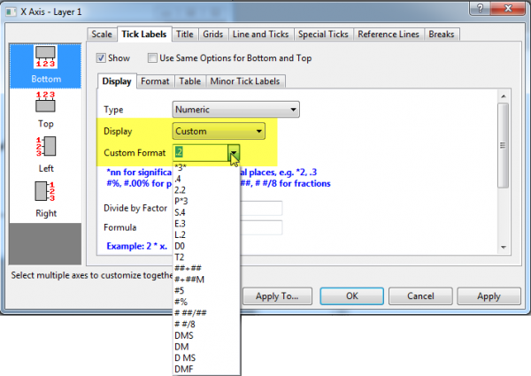

FAQ-123 Wie zeige ich meine Achsenbeschriftung als
Prozentangabe oder Bruch oder Längen-/Breitengrad an?
Display-Percentage-Axis-Label
Letztes Update: 11.12.2018
Manchmal, wenn Sie ein Diagramm zeichnen und Folgendes anzeigen möchten:
- die dezimalen Hilfsstrichsbeschriftungen als Prozentangabe, wie
10 %,
- die numerischen Hilfsstrichsbeschriftungen als Bruch, wie 3/8,
- die Längen-/Breitengrad-Hilfsstrichsbeschriftungen als Grad-Minute-Sekunde,
wie 37° 20' 33".
Dann können Sie das Kombinationsfeld der Hilfsstrichsbeschriftungen
Benutzerdefiniertes Anzeigeformat für die Achsen verwenden, um
Ihre benutzerdefinierten Anzeigeformate mit Origin-Formatnotationen
zu definieren.

- klicken Sie doppelt auf die Hilfsstrichsbeschriftung, um den Dialog
Achsen zu öffnen.
- Gehen Sie zur Registerkarte Beschriftungen der Hilfsstriche
und dann zur Registerkarte Anzeige.
Fall
1: Beschriftung mit Prozentangabe anzeigen
Ab Origin 2018b unterstützen Arbeitsblätter die Anzeige von Dezimalzahlen
als Prozentangaben, z. B. 10 %, 20 % etc. Nachdem das Diagramm jedoch
gezeichnet wurde, werden die Beschriftungen der Achsenhilfsstriche noch
als Dezimalzahlen angezeigt, z. B. 0,1, 0,2. Um die Hilfsstrichsbeschriftungen
als Prozentangaben zu zeigen, können Sie bei geöffneter Registerkarte
Anzeige (siehe oben)
- die Option Benutzerdefiniert in der Auswahlliste Anzeige
auswählen.
- Wählen Sie in der Auswahlliste #% im Textfeld Benutzerdefiniertes
Format oder geben Sie es ein.
- Klicken Sie auf OK.
 |
In Origin 2018 und älteren Versionen, die das Prozentformat nicht unterstützen,
können Sie folgende Schritte befolgen, um die Hilfsstrichsbeschriftungen
als Prozentangaben anzuzeigen:
- Klicken Sie doppelt auf die Hilfsstrichsbeschriftung, um den Dialog
Achsen zu öffnen.
- Gehen Sie zur Registerkarte Beschriftungen der Hilfsstriche
und dann zur Registerkarte Anzeige.
- Geben Sie 1/100 oder 0,01 im Textfeld Teilungsfaktor
ein.
- Geben Sie % in dem Textfeld Suffix ein.
- Klicken Sie auf OK.
|
Fall
2: Beschriftung mit Bruchangabe anzeigen
Ab Origin 2018b unterstützt Origin die numerische Hilfsstrichsbeschriftung
als Bruchangabe. Über die geöffnete Registerkarte Anzeige (siehe
oben) können Sie
- die Option Benutzerdefiniert in der Auswahlliste Anzeige
auswählen.
- Wählen Sie # ##/## oder # #/8 in der Auswahlliste
oder geben Sie Ihre
eigene benutzerdefinierte Formatnotation im Textfeld Benutzerdefiniertes
Format ein.
- Klicken Sie auf OK.
Fall 3: Beschriftung mit Längen-/Breitengrad anzeigen
Ab Origin 2018b unterstützt Origin die Beschriftung der Hilfsstriche
mit Längen-/Breitengrad als Grad-Minute-Sekunde. Mit der oben geöffneten
Registerkarte Anzeige können Sie
- die Option Benutzerdefiniert in der Auswahlliste Anzeige
auswählen.
- Wählen Sie eine native Notation wie DMS in der Auswahlliste
oder geben Sie Ihre
eigene benutzerdefinierte Formatnotation im Textfeld Benutzerdefiniertes
Format ein.
- Klicken Sie auf OK.
Schlüsselwörter:%,
Achse, Zeichnung, Beschriftung, Skalierung, Suffix, Präfix, Bruch, Längengrad
und Breitengrad, Grad, Minute und Sekunde, DMS, DD-MM-SS
Origin-Version mind. erforderlich: 2018b